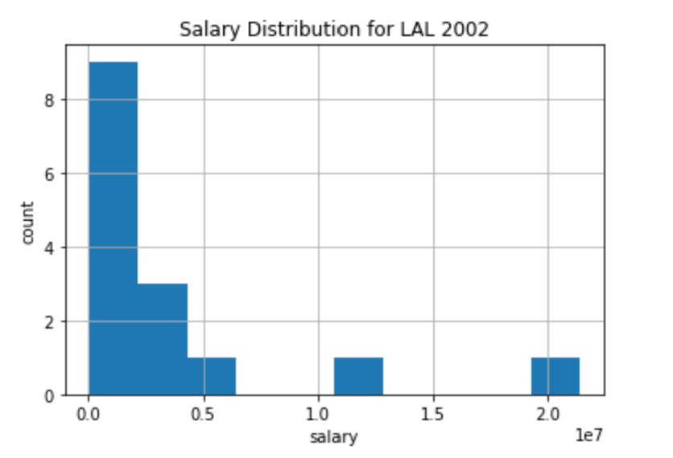
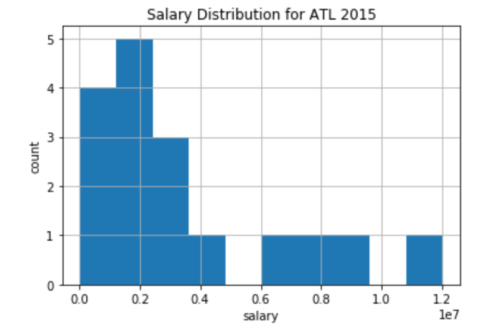

Front Office
Data Deliverable
GitHub(might not work)
Drive
Investigative Question:
We want to look at how salary scatter correlates to team success in the NBA, NFL, and MLB over the last 20 years. For example, it might be the case in the NBA that teams paying huge salaries to a few players and very little to others are generally more successful than other teams with similar payrolls that have a flatter salary distribution. Alternatively, the opposite might be true; perhaps teams with no massive salaries but few very low salaries are more successful. Furthermore, it seems possible that the relationship between salary scatter and team success might vary across sports. Do some sports reward spending big on a couple superstars at the expense of the rest of the roster, while other sports reward even spending and a balanced team with no “weak links” but also no superstars? We may also try to see if these findings hold over time (i.e. has the relationship between salary scatter and team performance changed over the last 20 years?).
Where is the data from?
We collected a total of 6 tables, recording team performance and player salary from 3 sports (baseball, basketball, and football) over a period of 20 (10 for football) years. We collected our football and baseball performance data using the sportsreference api and all of our basketball data by scraping the sportsreference website (in this case the api didn’t provide the data in the format we wanted). Sportsreference has statistics for many sports, as well as a dedicated api, so it generally seems pretty reputable. We collected the NFL and MLB salary information from USA Today and sportsreference. Unfortunately, this dataset only contains data from 2000-2009 for the NFL, and we were unable to locate more comprehensive datasets. Interestingly, many websites offer these missing football salary data behind a paywall. USA Today most likely has reputable data, as it is a known news source. Our data should not exhibit any sport of sampling bias, as we collected comprehensive team performance and salaries for each sport- we did not sample anything.
How clean is the data?
The data is relatively clean, and contains everything we need to answer the questions we initially posed. We have data for every team in the NBA and MLB for the last 20 years, and data for every team in the NFL for the last 10 years. For each team and each year, we have data for team ranking (winning percentage or points for/against) and salaries for every player on that roster. The result is two tables for each of the 3 sports we are considering. One table has columns: year, team name, team ranking. The other has columns: player name, team, year, and player salary. For example, for the NBA we have data for 600 team rankings (30 teams x 20 years) and 10,000 player salaries (30 teams x 20 years x [several players per team].
An example of a top-heavy salary distribution is shown below for the 2002 Los Angeles Lakers (RIP Kobe).

An example of a less top-heavy salary distribution is shown below for the 2015 Atlanta Hawks.

Currently, we have MLB data scraped from two different sources. Both sources appear to have missing salaries. If we can determine that a combination of these two sources have comprehensive salary data, then we will proceed with what we have. If not, it may become necessary as we process our data to scrape from an alternative source. The only other missing values we have are for player position. Most players have a listed position, but occasionally there are players without a position listed. Likely, this is because they play multiple positions. However, player position is not important for our analysis -- we care only about salary scatter, regardless of which positions are getting paid the most. It is possible the position data could also be interesting to look at, but at the moment we do not intend to analyze this positional data.
There are no duplicates (except in the aforementioned case of MLB data scraped from 2 different sources). It is the case that certain players get traded partway through a season, and therefore they play on multiple teams in a given season / are paid by more than 1 organization. This should not be a problem, though, since our data simply lists separate entries for each team the player played for that year.
No data type issues. Another note: we don’t need to worry about inflation over the last 20 years. Our measure of salary scatter is only concerned with relative salaries, not absolute salaries.
Summarize any challenges or observations you have made since collecting your data. Then, discuss your next steps and how your data collection has impacted the type of analysis you will perform. (approximately 3-5 sentences)
One challenge we will need to consider moving forward is working with two separate sources of MLB data, both of which are missing some player salaries. Once again, we will need to determine that in tandem these datasets are comprehensive, or else find an alternative source to hopefully scrape better data from. Looking at our initial data (see above) there does appear to be significant differences in salary scatter across teams and sports. This is verification that there is in fact something interesting for us to analyze. Our data collection was overall successful, and so we have not needed to change our central questions. A first step in our data analysis will be figuring out a metric to quantify salary scatter.